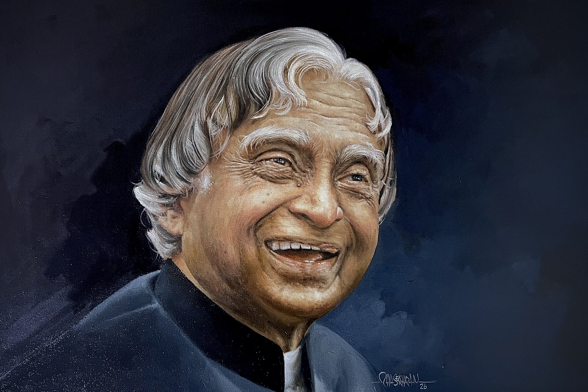

The Missile Man of India • Scientist • Teacher • Visionary

Dr. Avul Pakir Jainulabdeen Abdul Kalam was one of India's most respected scientists and the 11th President of India. Born on 15 October 1931 in Rameswaram, Tamil Nadu, he rose from humble beginnings through hard work, dedication, and an unbreakable belief in education.
He played a significant role in India's civilian space programme and military missile development. Because of his remarkable contributions to defence technology, he earned the title "Missile Man of India." His leadership inspired generations of scientists, engineers, and students.
As President from 2002 to 2007, Dr. Kalam became known as the "People's President" because of his humility and close connection with young minds. He continuously encouraged students to dream big, innovate, and contribute to the nation's development.
Even after leaving office, he dedicated his life to teaching and motivating youth. His books, speeches, and vision continue to inspire millions of people around the world. His life remains a symbol of perseverance, integrity, and service to humanity.
Joined DRDO as a scientist.
Transferred to ISRO and led India's Satellite Launch Vehicle project.
Played a crucial role in the Pokhran-II nuclear tests.
Served as the 11th President of India.
Awarded the Bharat Ratna, India's highest civilian honour.
"Dream is not that which you see while sleeping; it is something that does not let you sleep."